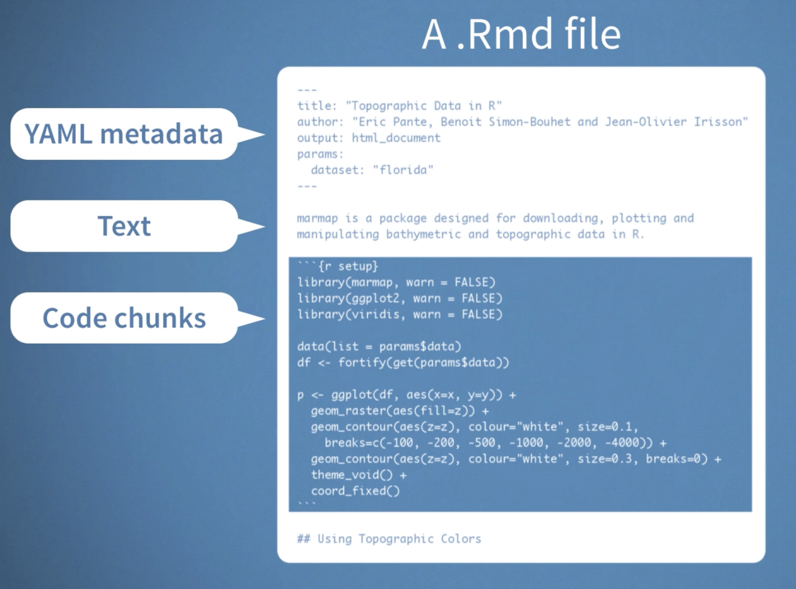
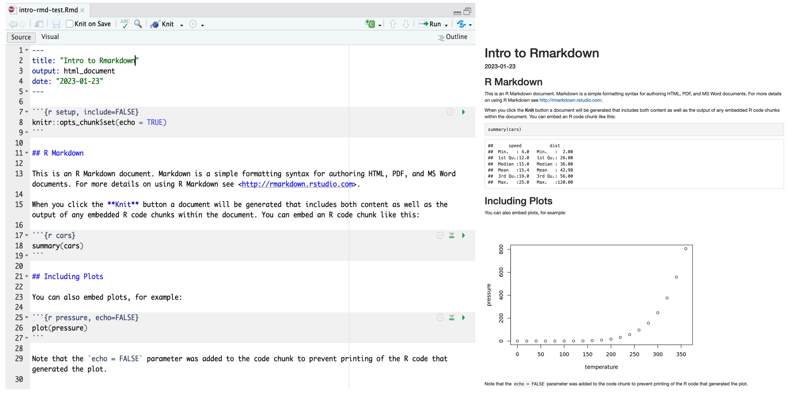
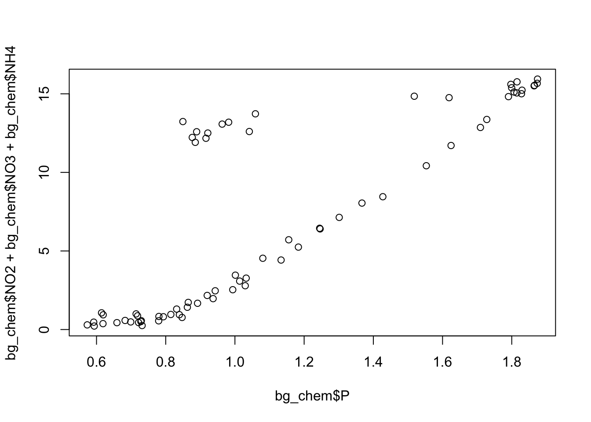

5 Introduction to RMarkdown
5.1 Literate Analysis with RMarkdown
5.1.1 Learning Objectives
In this lesson we will:
- explore an example of RMarkdown as literate analysis
- learn markdown syntax
- write and run R code in RMarkdown
- build and knit an example document
5.1.2 Introduction and motivation
The concept of literate analysis dates to a 1984 article by Donald Knuth. In this article, Knuth proposes a reversal of the programming paradigm.
Instead of imagining that our main task is to instruct a computer what to do, let us concentrate rather on explaining to human beings what we want a computer to do.
If our aim is to make scientific research more transparent, the appeal of this paradigm reversal is immediately apparent. All too often, computational methods are written in such a way as to be borderline incomprehensible - even to the person who originally wrote the code! The reason for this is obvious, computers interpret information very differently than people do. By switching to a literate analysis model, you help enable human understanding of what the computer is doing. As Knuth describes, in the literate analysis model, the author is an “essayist” who chooses variable names carefully, explains what they mean, and introduces concepts in the analysis in a way that facilitates understanding.
RMarkdown is an excellent way to generate literate analysis, and a reproducible workflow. RMarkdown is a combination of two things - R, the programming language, and markdown, a set of text formatting directives. In an R script, the language assumes that you are writing R code, unless you specify that you are writing prose (using a comment, designated by #). The paradigm shift of literate analysis comes in the switch to RMarkdown, where instead of assuming you are writing code, Rmarkdown assumes that you are writing prose unless you specify that you are writing code. This, along with the formatting provided by markdown, encourages the “essayist” to write understandable prose to accompany the code that explains to the human-beings reading the document what the author told the computer to do. This is in contrast to writing just R code, where the author telling to the computer what to do with maybe a smattering of terse comments explaining the code to a reader.
Before we dive in deeper, let’s look at an example of what a rendered literate analysis with RMarkdown can look like using a real example. Here is an example of a real analysis workflow written using RMarkdown.
There are a few things to notice about this document, which assembles a set of similar data sources on salmon brood tables with different formatting into a single data source.
- It introduces the data sources using in-line images, links, interactive tables, and interactive maps.
- An example of data formatting from one source using R is shown.
- The document executes a set of formatting scripts in a directory to generate a single merged file.
- Some simple quality checks are performed (and their output shown) on the merged data.
- Simple analysis and plots are shown.
In addition to achieving literate analysis, this document also represents a reproducible analysis. Because the entire merging and quality control of the data is done using the R code in the RMarkdown, if a new data source and formatting script are added, the document can be run all at once with a single click to re-generate the quality control, plots, and analysis of the updated data.
RMarkdown is an amazing tool to use for collaborative research, so we will spend some time learning it well now, and use it through the rest of the course.
5.1.3 Basic RMarkdown syntax
An RMarkdown file has three main components: - YAML metadata to guide the RMarkdown build process - Text to display - Code chunks to run

Today we are going to use Rmarkdown to run some analysis on data. We are specifically going to focus on the code chunk and text components. We will discuss more about the YAML part on of an RMarkdown later in the course. For now, you just need to know that every RMarkdown file has a YAML and this sets some general guidelines on how your want the output of your document to look like.
Setup
Open a new RMarkdown file using the following prompts:
File -> New File -> RMarkdown
A popup window will appear. You can just click the OK button here, or give your file a new title if you wish. Leave the output format as HTML.
The first thing to notice is that by opening a file, we are again seeing the 4th pane of the RStudio console, which is essentially a text editor.
Let’s have a look at this file — It looks a little different than a R script. It’s not blank; there is some initial text already provided for you. Lets identify the three main components in the image above. We have the YAML a the top, in between the two sets of dashed lines. Then we also see white and grey sections. The gray sections are R code chunks and the white sections are plain text.
Let’s go ahead and render this file by clicking the “Knit” button, the blue yarn at the top of the RMarkdown file. When you first click this button, RStudio will prompt you to save this file. Save it in the top level of your home directory on the server, and name it something that you will remember (like rmarkdown-intro.Rmd).

What do you notice between the two?
First, the knit process produced a second file (an HTML file) that popped up in a second window. You’ll also see this file in your directory with the same name as your Rmd, but with the html extension. In it’s simplest format, RMarkdown files come in pairs - the RMarkdown file, and its rendered version. In this case, we are knitting, or rendering, the file into HTML. You can also knit to PDF or Word files.
Notice how the grey R code chunks are surrounded by 3 back-ticks and {r LABEL}. These are evaluated and return the output text in the case of summary(cars) and the output plot in the case of plot(pressure). The label next to the letter r in the code chunk syntax is a chunk label - this can help you navigate your RMarkdown document using the drop-down menu at the bottom of the editor pane.
Notice how the code plot(pressure) is not shown in the HTML output because of the R code chunk option echo = FALSE. RMarkdown has lots of chunk options: - allow for code to be run but not shown (echo = FALSE), - code to be shown but not run (eval = FALSE), - code to be run, but results not shown (results = 'hide'), - or any combination of those.
It is important to emphasize one more time that in an RMarkdown document, the gray areas of the document are code, in this case R code because that is what it is indicated in the ```{r} syntax at the start of this gray area. And the white areas of this Rmd are in Markdown language.
Let’s talk about Markdown first, before going deeper into the R side. Markdown is a formatting language for plain text, and there are only around 15 rules to know.
Notice the syntax in the document we just knitted:
- headers get rendered at multiple levels:
#,## - bold:
**word**
There are some good cheatsheets to get you started, and here is one built into RStudio: Go to Help > Markdown Quick Reference .
Important: note that the hash symbol # is used differently in Markdown and in R:
- in an R script or inside an R code chunk, a hash indicates a comment that will not be evaluated. You can use as many as you want:
#is equivalent to######. It’s just a matter of style. - in Markdown, a hash indicates a level of a header. And the number you use matters:
#is a “level one header”, meaning the biggest font and the top of the hierarchy.###is a level three header, and will show up nested below the#and##headers.

Challenge
- In Markdown, Write some italic text, make a numbered list, and add a few sub-headers. Use the Markdown Quick Reference (in the menu bar: Help > Markdown Quick Reference).
- Re-knit your html file and observe your edits.
5.1.3.1 Rmarkdown editing tools
Recent versions of RStudio, now have a ‘what you see is what you get’ (wysiwyg) editor or Visual editor, which can be a nice way to write markdown without remembering all of the markdown rules. Since there aren’t many rules for markdown, I recommend just learning them - especially since markdown is used in many, many other contexts besides RMarkdown (formatting GitHub comments, for example).
To access the editor, click the Visual button in the upper left hand corner of your editor pane. You’ll notice that your document is now formatted as you type, and you can change elements of the formatting using the row of icons in the top of the editor pane. Although I don’t really recommend doing all of your markdown composition in the Visual editor, there are two features to this editor that I find immensely helpful, adding citations, and adding tables.
From the insert drop down, select “citation.” In the window that appears, there are several options in the left hand panel for the source of your citation. If you had a citation manager, such as Zotero, installed, this would be included in that list. For now, select “From DOI”, and in the search bar enter a DOI of your choice (eg: 10.1038/s41467-020-17726-z), then select “Insert.”

After selecting insert, a couple of things happen. First, the citation reference is inserted into your markdown text as [@oke2020]. Second, a file called references.bib containing the BibTex format of the citation is created. Third, that file is added to the YAML header of your RMarkdown document (bibliography: references.bib). Adding another citation will automatically update your references.bib file. So easy!
The second task that the markdown editor is convenient for is generating tables. Markdown tables are a bit finicky and annoying to type, and there are a number of formatting options that are difficult to remember if you don’t use them often. In the top icon bar, the “table” drop down gives several options for inserting, editing, and formatting tables. Experiment with this menu to insert a small table.
5.1.4 Code chunks
Every time I open a new RMarkdown I delete everything below the “setup chunk” (line 10). The setup chunk is the one that looks like this:
knitr::opts_chunk$set(echo = TRUE)This is a very useful chunk that will set the default R chunk options for your entire document. I like keeping it in my document so that I can easily modify default chunk options based on the audience for my RMarkdown. For example, if I know my document is going to be a report for a non-technical audience, I might set echo = FALSE in my setup chunk, that way all of the text, plots, and tables appear in the knitted document. The code, on the other hand, is still run, but doesn’t display in the final document.
Now let’s practice with some R chunks. You can Create a new chunk in your RMarkdown in one of these ways:
- click “Insert > R” at the top of the editor pane
- type by hand ```{r} ```
- use the keyboard shortcut Command + Option + i (for windows, Ctrl + Alt + i)
Now, let’s write some R code.
x <- 4*3
x## [1] 12Hitting return does not execute this command; remember, it’s just a text file. To execute it, we need to get what we typed in the the R chunk (the grey R code) down into the console. How do we do it? There are several ways (let’s do each of them):
copy-paste this line into the console (generally not recommended as a primary method)
select the line (or simply put the cursor there), and click ‘Run’. This is available from
- the bar above the file (green arrow)
- the menu bar: Code > Run Selected Line(s)
- keyboard shortcut: command-return
click the green arrow at the right of the code chunk
5.1.5 Literate analysis practice
Now that we have gone over the basics, let’s go a little deeper by building a simple, small RMarkdown document that represents a literate analysis using real data. We are going to work with the same data we download yesterday. You should all have the BGchem2008data.csv inside your data folder. If you don’t, please follow the steps below to download the data and then upload to your RStudio Server.
Setup
- Navigate to the following dataset: https://doi.org/10.18739/A25T3FZ8X
- Download the file “BGchem2008data.csv”
- Click the “Upload” button in your RStudio server file browser.
- In the dialog box, make sure the destination directory is the
datadirectory in your R project, click “choose file,” and locate the BGchem2008data.csv file. Press “ok” to upload the file.
5.1.5.1 Developing code in RMarkdown
Experienced R users who have never used RMarkdown often struggle a bit in the transition to developing analysis in RMarkdown - which makes sense! It is switching the code paradigm to a new way of thinking. Rather than starting an R chunk and putting all of your code in that single chunk, here I describe what I think is a better way.
- Open a document and block out the high-level sections you know you’ll need to include using top level headers.
- Add bullet points for some high level pseudo-code steps you know you’ll need to take.
- Start filling in under each bullet point the code that accomplishes each step. As you write your code, transform your bullet points into prose, and add new bullet points or sections as needed.
For this mini-analysis, we will just have the following sections and code steps:
Introduction
- read in data
Analysis
- calculate summary statistics
- calculate mean Redfield ratio
- plot Redfield ratio
Challenge
Create the ‘outline’ of your document with the information above. Top level bullet points should be top level sections. The second level points should be a list within each section.
Next, write a sentence saying where your dataset came from, including a hyperlink, in the introduction section.
Hint: Navigate to Help > Markdown Quick Reference to lookup the hyperlink syntax.
5.1.5.2 Read in the data
Now that we have outlined our document, we can start writing code! To read the data into our environment, we will use a function from the readr package.
To use a package in our analysis, we need to load it into our environment using library(package_name). Even though we have installed it, we haven’t yet told our R session to access it. Because there are so many packages (many with conflicting namespaces) R cannot automatically load every single package you have installed. Instead, you load only the ones you need for a particular analysis. Loading the package is a key part of the reproducible aspect of our Rmarkdown, so we will include it as an R chunk. It is generally good practice to include all of your library calls in a single, dedicated R chunk near the top of your document. This lets collaborators know what packages they might need to install before they start running your code.
You should have already installed readr as part of the setup for this course, so add a new R chunk below your setup chunk that calls the readr library, and run it. It should look like this:
library(readr)Now, below the introduction that you wrote, add a code chunk that uses the read_csv function to read in your data file.
5.1.5.2.1 Recap on file paths
In computing, a path specifies the unique location of a file on the filesystem. A path can come in one of two forms: absolute or relative.
Absolute paths start at the very top of your file system, and work their way down the directory tree to the file.
Relative paths start at an arbitrary point in the file system. In R, this point is set by your working directory.
5.1.5.2.2 File path in RMarkdown
RMarkdown has a special way of handling relative paths that can be very handy. When working in an RMarkdown document, R will set all paths relative to the location of the RMarkdown file. This way, you don’t have to worry about setting a working directory, or changing your colleagues absolute path structure with the correct user name, etc. If your RMarkdown is stored near where the data it analyses are stored (good practice, generally), setting paths becomes much easier!
If you saved your “BGchem2008data.csv” data file in the same location as your Rmd, you can just write the following to read it in. Checkout the help page by typing ?read_csv in the console. This tells you that for this function the first argument should be a pointer to the file. Rstudio has some nice helpers to help you navigate paths. If you open quotes and press ‘tab’ with your cursor between the quotes, a popup menu will appear showing you some options.
bg_chem <- read_csv("../data/BGchem2008data.csv")Parsed with column specification:
cols(
Date = col_date(format = ""),
Time = col_datetime(format = ""),
Station = col_character(),
Latitude = col_double(),
Longitude = col_double(),
Target_Depth = col_double(),
CTD_Depth = col_double(),
CTD_Salinity = col_double(),
CTD_Temperature = col_double(),
Bottle_Salinity = col_double(),
d18O = col_double(),
Ba = col_double(),
Si = col_double(),
NO3 = col_double(),
NO2 = col_double(),
NH4 = col_double(),
P = col_double(),
TA = col_double(),
O2 = col_double()
)
Warning messages:
1: In get_engine(options$engine) :
Unknown language engine 'markdown' (must be registered via knit_engines$set()).
2: Problem with `mutate()` input `Lower`.
ℹ NAs introduced by coercion
ℹ Input `Lower` is `as.integer(Lower)`.
3: In mask$eval_all_mutate(dots[[i]]) : NAs introduced by coercionIf you run this line in your RMarkdown document, you should see the bg_chem object populate in your environment pane. It also spits out lots of text explaining what types the function parsed each column into. This text is important, and should be examined, but we might not want it in our final document.
Challenge
Use one of two methods to figure out how to suppress warning and message text in your chunk output:
- The gear icon in the chunk, next to the play button
- The RMarkdown reference guide (also under Help > Cheatsheets)
Aside
Why not use read.csv from base R?
We chose to show read_csv from the readr package for a few reasons. One is to introduce the concept of packages and showing how to load them, but read_csv has several advantages over read.csv.
- more reasonable function defaults (no stringsAsFactors!)
- smarter column type parsing, especially for dates
- it is much faster than
read.csv, which is helpful for large files
5.1.5.3 Calculate Summary Statistics
As our “analysis” we are going to calculate some very simple summary statistics and generate a single plot. In this dataset of oceanographic water samples, we will be examining the ratio of nitrogen to phosphate to see how closely the data match the Redfield ratio, which is the consistent 16:1 ratio of nitrogen to phosphorous atoms found in marine phytoplankton.
Let’s start by exploring the data we just read. Every time I read a new data set, I like to familiarize my self with it and make sure that the data looks as expected. There are a couple of functions I use to do this. We first create a new R chunk and run the following functions. Because this just an exploration and we do not want this chunk to be part of our report, we will indicate that by adding eval = FALSE and echo = FLASE in the setup of the chunk, that way, the code in this chunk will not run and not be displayed when I knit the final document.
## Prints the column names of my data frame
colnames(bg_chem)
## General structure of the data frame - shows class of each column
str(bg_chem)
## First 6 lines of the data frame
head(bg_chem)
## Summary of each column of data
summary(bg_chem)
## Opens data frame in its own tab to see each row and column of the data
View(bg_chem)Now that we know a more about the data set we are working with lets do some analyses. Under the appropriate bullet point in your analysis section, create a new R chunk, and use it to calculate the mean nitrate (NO3), nitrite (NO2), ammonium (NH4), and phosphorous (P) measured. Save these mean values as new variables with easily understandable names, and write a (brief) description of your operation using markdown above the chunk. Remember that the $ indicates which column of your data to look into.
nitrate <- mean(bg_chem$NO3)
nitrite <- mean(bg_chem$NO2)
amm <- mean(bg_chem$NH4)
phos <- mean(bg_chem$P)In another chunk, use those variables to calculate the nitrogen:phosphate ratio (Redfield ratio).
ratio <- (nitrate + nitrite + amm)/phosYou can access this variable in your Markdown text by using R in-line in your text. The syntax to call R in-line (as opposed to as a chunk) is a single backtick `, the letter “r”, whatever your simple R command is - here we will use round(ratio) to print the calculated ratio, and a closing backtick `. So: ` 6 `. This allows us to access the value stored in this variable in our explanatory text without resorting to the evaluate-copy-paste method so commonly used for this type of task. The text as it looks in your RMrakdown will look like this:
The Redfield ratio for this dataset is approximately `r round(ratio)`.
And the rendered text like this:
The Redfield ratio for this dataset is approximately 6.
Finally, create a simple plot using base R that plots the ratio of the individual measurements, as opposed to looking at mean ratio.
plot(bg_chem$P, bg_chem$NO2 + bg_chem$NO3 + bg_chem$NH4)
Challenge
Decide whether or not you want the plotting code above to show up in your knitted document along with the plot, and implement your decision as a chunk option.
“Knit” your RMarkdown document (by pressing the Knit button) to observe the results.
Aside
How do I decide when to make a new chunk?
Like many of life’s great questions, there is no clear cut answer. My preference is to have one chunk per functional unit of analysis. This functional unit could be 50 lines of code or it could be 1 line, but typically it only does one “thing.” This could be reading in data, making a plot, or defining a function. It could also mean calculating a series of related summary statistics (as above). Ultimately the choice is one related to personal preference and style, but generally you should ensure that code is divided up such that it is easily explainable in a literate analysis as the code is run.
5.1.6 RMarkdown and environments
Let’s walk through an exercise with the document you built together to demonstrate how RMarkdown handles environments. We will be deliberately inducing some errors here for demonstration purposes.
First, follow these steps:
- Restart your R session (Session > Restart R)
- Run the last chunk in your Rmarkdown by pressing the play button on the chunk
Perhaps not surprisingly, we get an error:
Error in plot(bg_chem$P, bg_chem$NO2 + bg_chem$NO3 + bg_chem$NH4) :
object 'bg_chem' not foundThis is because we have not run the chunk of code that reads in the bg_chem data. The R part of Rmarkdown works just like a regular R script. You have to execute the code, and the order that you run it in matters. It is relatively easy to get mixed up in a large RMarkdown document - running chunks out of order, or forgetting to run chunks. To resolve this, follow the next step:
- Select from the “Run” menu (top right of Rmarkdown editor) “Restart R and run all chunks”
- Observe the
bg_chemvariable in your environment.
This is one of my favorite ways to reset and re-run my code when things seem to have gone sideways. This is great practice to do periodically since it helps ensure you are writing code that actually runs.
For the next demonstration:
- Restart your R session (Session > Restart R)
- Press Knit to run all of the code in your document
- Observe the state of your environment pane
Assuming your document knitted and produced an html page, your code ran. Yet the environment pane is empty. What happened?
The Knit button is rather special - it doesn’t just run all of the code in your document. It actually spins up a fresh R environment separate from the one you have been working in, runs all of the code in your document, generates the output, and then closes the environment. This is one of the best ways RMarkdown helps ensure you have built a reproducible workflow. If, while you were developing your code, you ran a line in the console as opposed to adding it to your RMarkdown document, the code you develop while working actively in your environment will still work. However, when you knit your document, the environment RStudio spins up doesn’t know anything about that working environment you were in. Thus, your code may error because it doesn’t have that extra piece of information. Commonly, library calls are the source of this kind of frustration when the author runs it in the console, but forgets to add it to the script.
To further clarify the point on environments, perform the following steps:
- Select from the “Run” menu (top right of Rmarkdown editor) “Run All”
- Observe all of the variables in your environment.
Aside
What about all my R scripts?
Some pieces of R code are better suited for R scripts than RMarkdown. A function you wrote yourself that you use in many different analyses is probably better to define in an R script than repeated across many RMarkdown documents. Some analyses have mundane or repetitive tasks that don’t need to be explained very much. For example, in the document shown in the beginning of this lesson, 15 different excel files needed to be reformatted in slightly different, mundane ways, like renaming columns and removing header text. Instead of including these tasks in the primary markdown, I instead chose to write one R script per file and stored them all in a directory. I took the contents of one script and included it in my literate analysis, using it as an example to explain what the scripts did, and then used the source function to run them all from within my RMarkdown.
So, just because you know RMarkdown now, doesn’t mean you won’t be using R scripts anymore. Both .R and .Rmd have their roles to play in analysis. With practice, it will become more clear what works well in RMarkdown, and what belongs in a regular R script.
5.1.7 Go Further
Create an RMarkdown document with some of your own data. If you don’t have a good dataset handy, use the example dataset here:
Your document might contain the following sections:
Introduction to your dataset
- Include an external link
Simple analysis
Presentation of a result
- A table
- An in-line R command
5.1.9 Troubleshooting
5.1.9.1 My RMarkdown won’t knit to PDF
If you get an error when trying to knit to PDF that says your computer doesn’t have a LaTeX installation, one of two things is likely happening:
- Your computer doesn’t have LaTeX installed
- You have an installation of LaTeX but RStudio cannot find it (it is not on the path)
If you already use LaTeX (like to write papers), you fall in the second category. Solving this requires directing RStudio to your installation - and isn’t covered here.
If you fall in the first category - you are sure you don’t have LaTeX installed - can use the R package tinytex to easily get an installation recognized by RStudio, as long as you have administrative rights to your computer.
To install tinytex run:
install.packages("tinytex")
tinytex::install_tinytex()If you get an error that looks like destination /usr/local/bin not writable, you need to give yourself permission to write to this directory (again, only possible if you have administrative rights). To do this, run this command in the terminal:
sudo chown -R `whoami`:admin /usr/local/binand then try the above install instructions again. More information about tinytex can be found here